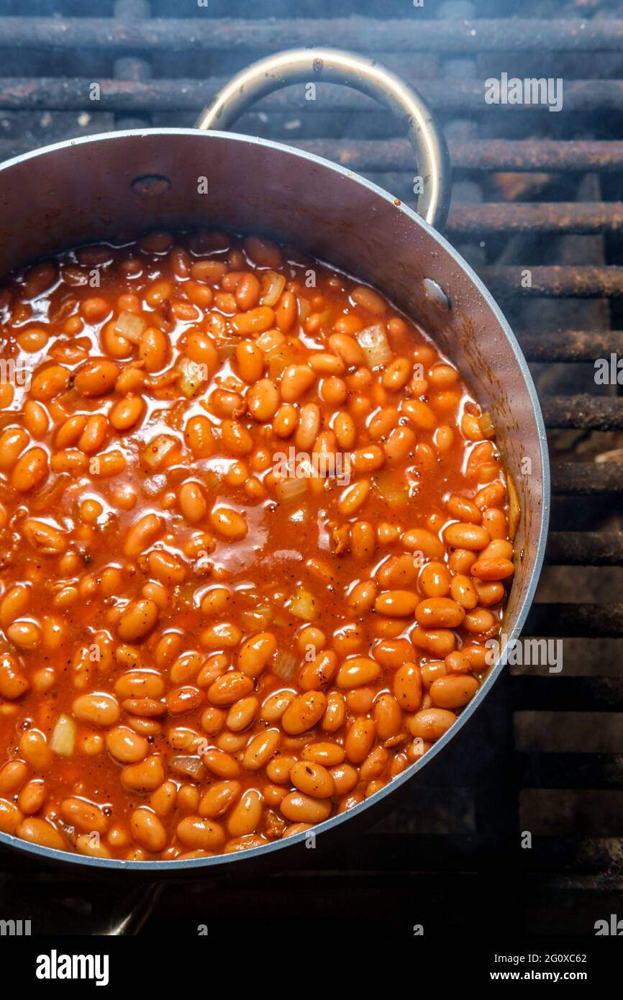

Frijoles Vaqueros!

Esta receta de olla de cocción lenta ofrece un plato sustancioso de
hamburguesa, tocino y frijoles en una salsa espesa y dulce.
Ingredientes!
- hamburguesa de 1 Libra
- ½ libra de tocino
- 1 lata (28 onzas) de frijoles horneados con cerdo
- 1 lata (15 onzas) de frijoles rojos, enjuagados y escurridos
Pasos a Seguir
- Revuelve la Hamburguesa y el tocino.
- Revuelve la Hamburguesa cocida y el tocino
- Revuelva los frijoles horneados.
-
Revuelva los frijoles rojos, con todo y su carne Despues Cocinar a Fuego
Lento.
Volver al indice